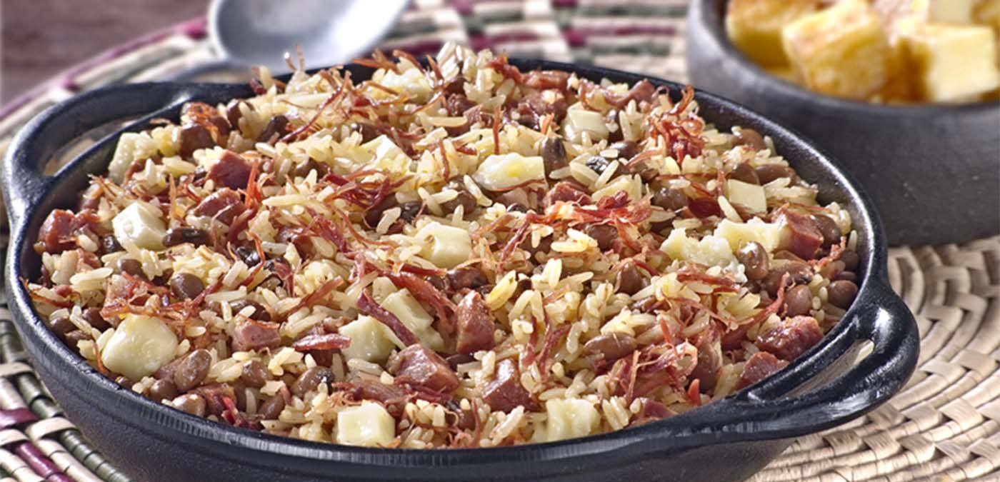
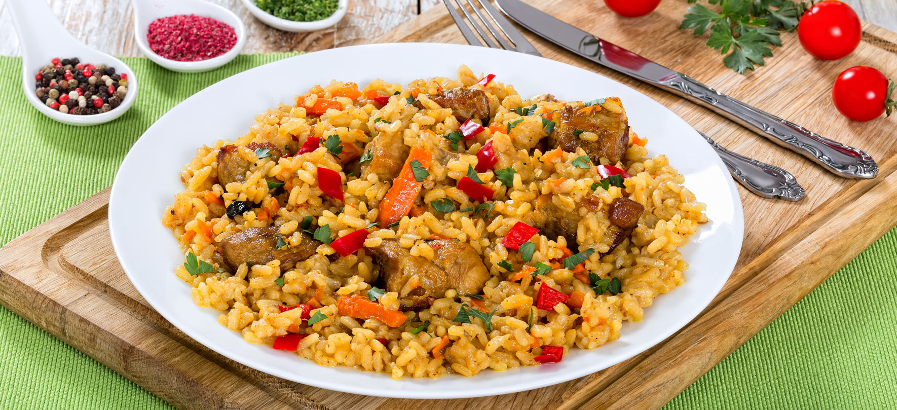
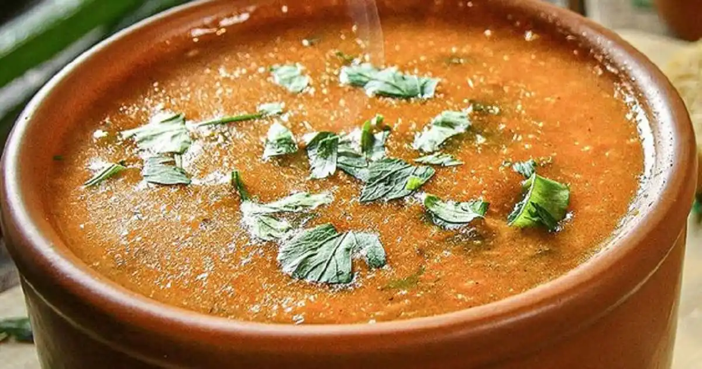

Nossas Receitas
Baião de dois
Ingredientes (6 porções):
- 1/2 kg de feijão verde
- 2 tabletes de caldo de carne
- 1 dente de alho amassado
- 1/2 colher (sopa) de coentro picado
- 150 g de queijo de coalho cortado em fatias finas
- 1 paio cortado em rodelas
- 1 cebola ralada
- 3 colheres (sopa) de óleo
- 2 xícaras e 1/2 (chá) de arroz lavado e escorrido
Modo de Preparo:
- Deixe o feijão de molho de véspera.
- No dia seguinte cozinhe-o juntamente com o caldo de carne e 2,5 litros de água fria.
- Tampe a panela e deixe cozinhar em fogo baixo por aproximadamente 1 hora.
- Em outra panela doure o paio, a cebola e o alho, no óleo.
- Junte o coentro e o arroz e refogue bem.
- Acrescente o feijão já cozido, juntamente com o caldo. Misture bem, tampe a panela e deixe cozinhar até que o arroz fique cozido, úmido e com consistência cremosa. Cubra o arroz com as fatias de queijo. Tampe a panela novamente e deixe que o vapor derreta o queijo.
- Sirva acompanhado de carne-de-sol frita ou assada.
Arroz Carreteiro Gaúcho
Ingredientes: (8 porções)
- 1,5 kg de charque cebola
- 2 cebolas grandes picadas pimentão verde
- 1 pimentão verde grande picado alho
- 6 dentes de alho picados bem miudinho tomate
- 2 tomates médios picados cheiro-verde
- 1 maço de tempero verde
- Azeite
- arroz
- 5 xícaras grandes de arroz água
- 10 xícaras e meia de água fervente
Modo de Preparo:
- Primeiramente algumas coisas importantíssimas devem ser observadas, carreteiro típico gaúcho jamais vai necessitar a adição de sal, pois não não há motivos de você deixar a carne de molho até que ela perca o sabor, para depois adicionar sal e a quantidade de azeite não foi descrita por mim, pois ela é relativa a quantidade de gordura presente na carne.
- Pique o charque em cubos pequenos, que tenham no máximo 1 cm³, cozinhe esse charque em água até que fique ainda bem salgado, porém supórtável ao paladar.
- Caso o charque seja muito salgado e após algum tempo de fervura o sabor ainda não seja o adequado, convém trocar a água e levar a nova fervura.
- Após ferver, escorra toda a água e frite em azeite, utilizando sempre o mínimo necessário, de modo que, à medida que frita, derreta a própria gordura e frite com ela.
- Deixe que frite até ficar bem dourado, adicione as cebolas, o pimentão, o alho, os tomates e o tempero verde.
- Deixe tudo fritar bem, até começar a secar, adicione o arroz e frite mais um pouco.
- Adicione a água fervente, mexa bem, misturando de forma uniforme os ingredientes, pois não poderá mexer mais após esse ponto.
- Espere retomar a fervura, abaixe o fogo e espere secar.
Caldo de piranha
Ingredientes: (8 porções)
- 1 kg de piranha
- 2 cebolas
- 1 sachê tempero para peixe sazón
- cheiro-verde
- Salsa e cebolinha a gosto
- alho
- 4 dentes de alho
- 1 l de água
- creme de cebola
- 1 pacote de creme de cebola
- 2 colheres (sopa) de azeite
Modo de Preparo:
- Primeiramente algumas coisas importantíssimas devem ser observadas, carreteiro típico gaúcho jamais vai necessitar a adição de sal, pois não não há motivos de você deixar a carne de molho até que ela perca o sabor, para depois adicionar sal e a quantidade de azeite não foi descrita por mim, pois ela é relativa a quantidade de gordura presente na carne.
- Pique o charque em cubos pequenos, que tenham no máximo 1 cm³, cozinhe esse charque em água até que fique ainda bem salgado, porém supórtável ao paladar.
- Caso o charque seja muito salgado e após algum tempo de fervura o sabor ainda não seja o adequado, convém trocar a água e levar a nova fervura.
- Após ferver, escorra toda a água e frite em azeite, utilizando sempre o mínimo necessário, de modo que, à medida que frita, derreta a própria gordura e frite com ela.
- Deixe que frite até ficar bem dourado, adicione as cebolas, o pimentão, o alho, os tomates e o tempero verde.
- Deixe tudo fritar bem, até começar a secar, adicione o arroz e frite mais um pouco.
- Adicione a água fervente, mexa bem, misturando de forma uniforme os ingredientes, pois não poderá mexer mais após esse ponto.
- Espere retomar a fervura, abaixe o fogo e espere secar.